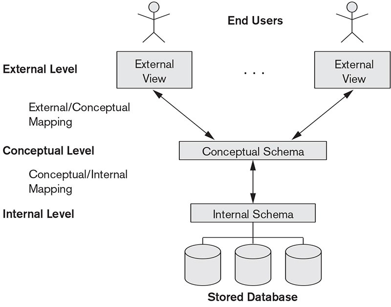

¿Qué es exactamente DDL?
El Lenguaje de Definición de Datos (DDL, por sus siglas en inglés) es el pilar de SQL que se encarga del diseño estructural. Si imaginas que una base de datos es un edificio, el DDL no son los muebles ni las personas que viven dentro; es el plano arquitectónico, las paredes y los cimientos que sostienen todo.
